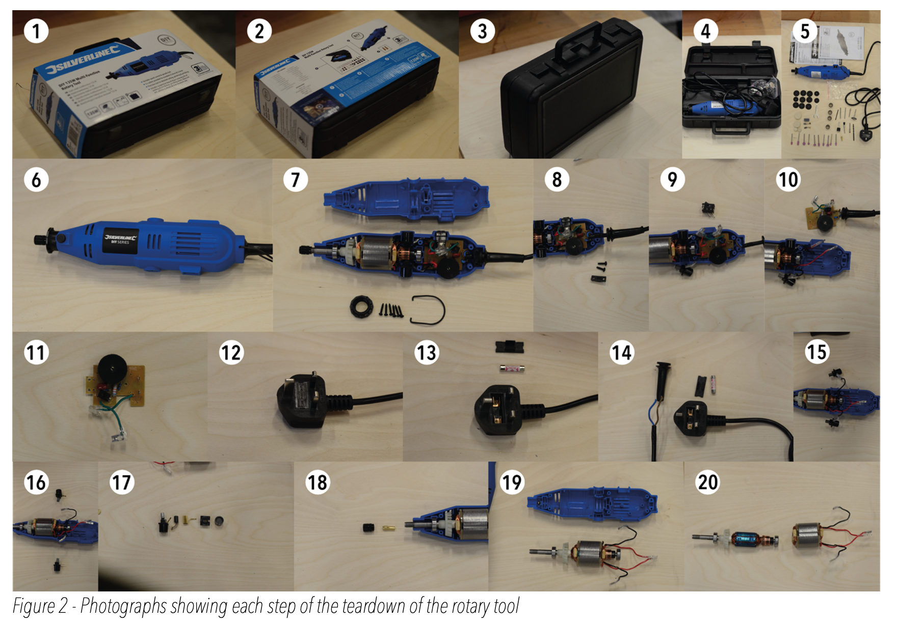
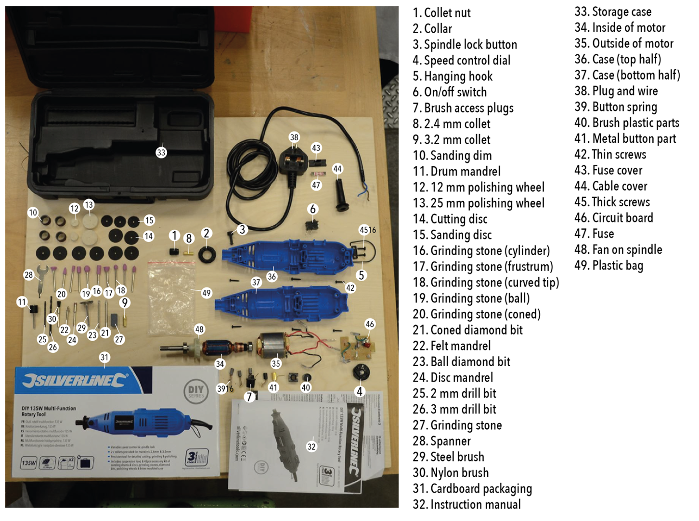
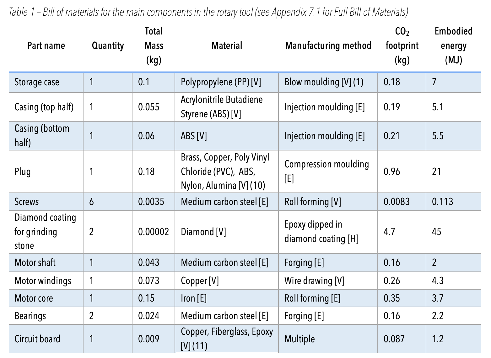
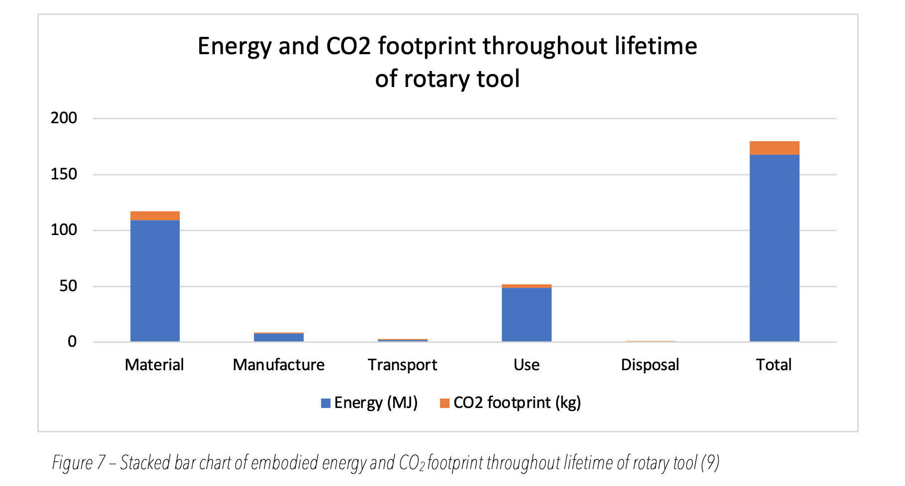
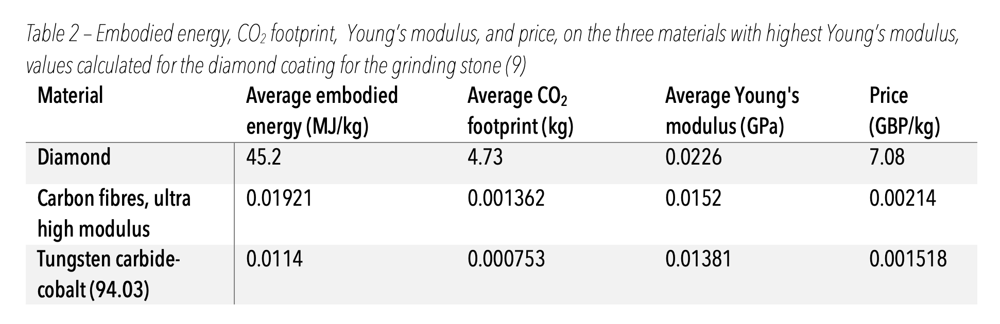
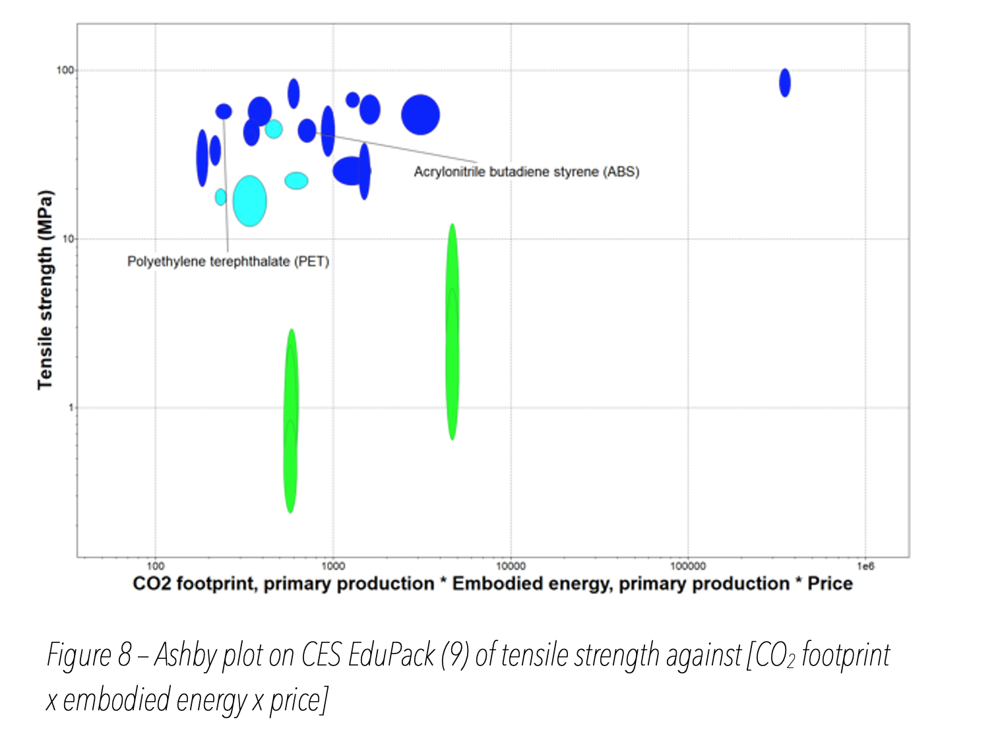

Louis Cutner
This report set out to explore the various manufacturing techniques and materials used in the
Silverline 249765 DIY multi-function rotary tool. Tomaszewska Eco-Innovations’ core brand values were
eco-friendliness whilst maintaining an affordable price. As a result, the embodied energy, CO2 footprint and
price of the rotary tool were investigated, and more eco-friendly alternative materials and manufacturing
techniques were suggested. The reverse engineered solution improved the rotary tool’s eco-friendliness and
decreased the total price, whilst ensuring the rotary tool could still function, as all alternatives had the
same required properties. The proposed changes for the rotary tool were:
1. The diamond coating on the diamond coated diamond stones was replaced with a Tungsten carbide-cobalt
(94.03) coating.
2. The material of the storage case for the rotary tool was changed from PP to bamboo, and the manufacturing
technique of blow moulding was no longer used.
3. The casing of the rotary tool was changed from ABS to PET.
These changes meant that the total embodied energy of the rotary tool decreased by 30% to 118 MJ, and
the total CO2 footprint decreased by 41% to 6.97 kg. In addition, the price decreased by £7.12, so the rotary
tool was even more affordable despite these changes. These suggested amendments would have allowed TEI to sell a
significantly more eco-friendly rotary tool for the same price.
Method
In order to examine the materials used in the rotary tool, and the manufacturing techniques used, the tool was
initially disassembled into its smallest possible components – so that they could be further examined. This
procedure was carried out using workshop tools such as screwdrivers and pliers. A photograph was taken at each
stage of the disassembly (Figure 2) to ensure a record was made; before the section was disassembled, with the
section disassembled in an exploded view, and just the part removed. Some components were not able to be fully
disassembled such as the bearings on the motor shaft (picture 20 in Figure 2) – due to the manufacturing
technique used to create these parts. Other standard parts such as the plug (picture 13 in Figure 2) and the
circuit board (picture 11 in Figure 2) were not disassembled fully as they are universal, and not made
specifically for the rotary tool.
Once the rotary tool was fully disassembled, the parts were arranged on
a teardown board in a logical arrangement clearly showing the rotary tool’s components, with each component
assigned a number and labelled. Each part was weighed individually on a mass balance with an accuracy of ±0.5 g.
All metal parts were tested for magnetism using a very strong magnet in an attempt to identify the metal.
Samples were taken from all of the plastic parts and tested according to the plastics identification chart (see
Appendix 7.2 for chart) to determine the polymer used. Tests ranged from burning to test flammability, and
dropping in water to test buoyancy. The mass of the coatings on some drill bits had to be estimated as there was
no feasible way of removing them for weighing.
For each part, the number on the teardown board, the name,
quantity, mass, material, manufacturing method, CO2 footprint, and the embodied energy were recorded in Table 1
(Bill of Materials). The CO2 footprint, and the embodied energy of each part was calculated using CES EduPack
(9). For the material and manufacturing technique of each part, the confidence level was indicated by G (guess),
H (hunch), E (educated estimate), or V (know/verified).


Bill of materials
Table 1 shows that the most common materials groups in the rotary tool are thermoplastics, ferrous metals, and
non-technical ceramics (for the coatings on the tool heads), with the most common materials being medium carbon
steel, PP, ABS, and copper.

ANALYSIS OF ROTARY TOOL’S EMBODIED ENERGY AND CO2 FOOTPRINT
The total embodied energy in the rotary tool throughout its lifetime was calculated to be 168 MJ (9), and the
total CO2 footprint was 11.9 kg (9) as seen in Figure 7. These calculations were made using the Eco Audit tool
on CES EduPack (9), employing data from the teardown, and research into manufacturing techniques and materials
of certain products.
From Figure 7, it can be seen that the materials of the rotary tool accounted for the majority of the embodied
energy (65%) and CO2 footprint (68.1%). The manufacture, transport, and disposal combined only accounted for
5.9% of the embodied energy, and 6.1% of the CO2 footprint, so could for the most part be ignored. Within the
materials, the diamond coating on the diamond coated grinding stones only had a mass of 0.02 g, whereas
accounted for 41.3% of the embodied energy, and 58.5% of the CO2 footprint of the rotary tool. This was because
diamond mining was very complex, and involved heavy machinery, transport, and explosives (21), so requiring a
lot of energy.
The manufacturing process of blow moulding used for the storage case accounted for 29.9% of the total CO2
footprint of manufacturing, even though its mass only accounted for 12.3% of the total. This was because the
process of blow moulding required a significant amount of energy (compressed air and electrical), hence had a
large CO2 footprint (22). However, the embodied energy of PP (the material the storage case was made from) only
accounted for 6.4% of the total, and the CO2 footprint only accounted for 2.2% of the total.
ABS was used for the top and bottom half of the casing, and when combined these parts accounted for 9.7% of the
total embodied energy, and 4.9% of the total CO2 footprint. Although the material appeared to have a large
embodied energy and CO2 footprint, the mass of these parts combined was 14.2% of the total mass.
When combined, all of the components of the motor accounted for 11.3% of the total embodied energy, and 11.5% of
the total CO2 footprint. However, the motor accounted for 35.8% of the total mass suggesting that the part was
relatively eco-friendly, as it just accounted for a large fraction of the total embodied energy. As a result, no
improvement to make the motor more eco-friendly was necessary. One problem that would have arisen if the
materials in the motor had been changed is that the motor was a standard component, which means that many
materials would have been very difficult to change as Silverline likely did not produce the motor. Furthermore
as the motor was a mechanical part, with which used electricity, it may have not worked properly if certain
materials were changed.
The plug accounted for 19.4% of the total embodied energy, and 11.9% of the total CO2 footprint. The plug’s mass
accounted for 22.2% of the total mass. Similarly to the motor, the plug was a standard component, and so it
would have been difficult to change its component materials. Moreover, there may have been requirements on how
the plug could have been designed or what materials it could have been made from as it was a major electrical
component, which could have been dangerous if it broke.

Amendment 1
The Diamond coating on the grinding stone was explored, as it only had a mass of 0.02 g, whereas accounted for
41.3% of the embodied energy, and 58.5% of the CO2 footprint of the rotary tool. It was investigated how
changing the material from diamond to another material with a high Young’s modulus would impact the
eco-friendliness and price of the rotary tool. The material had to have a high Young’s modulus, as grinding
stones have to be tougher than the material they are acting on. From Table 2, it was apparent that although
diamond had the highest Young’s modulus of all the materials in CES EduPack at 0.0226 GPa, it had an average
embodied energy 2352 times larger than the material with the second highest Young’s modulus, carbon fibres
(ultra high modulus) of 0.0152 GPa. Furthermore, diamond’s CO2 footprint was 3472 times larger the carbon
fibres’, and its price was 3308 times cheaper.
As the Young’s modulus of the carbon fibres was 67% of diamond’s Young’s modulus, but the gains on price and
eco-friendliness were enormous, it would have made sense to change the diamond coating to a coating of carbon
fibres. However, the manufacturing process of carbon fibres was not suited to being exposed on a cutting tool,
instead they should have been embedded within an epoxy matrix, meaning it was not practical to perform this
change. Instead, tungsten carbide-cobalt, had even better gain on eco-friendliness and price when compared to
diamond than the carbon fibres did, and Tungsten carbide-cobalt had a Young’s modulus of 61% of diamond’s –
which was deemed acceptable given the enormous eco-friendly and price gains. As a result of using tungsten
carbide-cobalt as a coating instead of diamond, the rotary tool’s embodied energy was reduced by 26.9% to 122.8
MJ/kg, and its total CO2 footprint was reduced by 39.7% to 7.17 kg.

Amendment 2
For the storage case PP was used. The advantageous mechanical factors in PP were its low density and a high
tensile strength. The factors that concerned TEI were CO2 footprint, embodied energy and price. These factors
were combined in Figure 7 in such a way that the ideal material would have been in the lower left corner of the
graph. From Figure 7, it was determined that bamboo was a good replacement for PP. The advantages of bamboo over
PP were that the average embodied energy decreased by 51%, and that the average CO2 footprint decreased by 64%,
however the average price would have increased by 19%. This meant that the total embodied energy of the rotary
tool decreased by 2.1%. Furthermore, the average tensile strength of bamboo was nearly six times greater, and
the average density was decreased by 22%, so the mechanical properties would in fact have been improved. One
potential problem would have been exploring how bamboo could have been manufactured to have achieved the same
geometry as the PP part. If bamboo
was used, the process of blow moulding would no longer be
performed for the storage case, and the eco-friendliness of the
production increased.

Amendment 3
For the casing of the rotary tool, ABS was used as it was cheap and easy to manufacture by injection moulding.
When looking at a replacement material, only materials that could have been injection moulded were considered,
so that the desired ease of manufacture remained. In Figure 8, only materials that could have been injection
moulded were plotted on an axis of tensile strength (a property desired in the part) against TEI’s desired
properties (low CO2 footprint, embodied energy, and price). Materials in the upper left corner of the graph
showed ideal properties, and
polyethylene terephthalate (PET) showed much better properties
for the role than ABS did. When PET was used, the average
embodied energy decreased by 11%, the average CO2 footprint decreased by 21%, and the average price decreased by
52%. Furthermore, the average tensile strength of PET was 29% larger than that of ABS.

Conclusion
The Silverline 249765 DIY multi-function rotary tool had a total embodied energy of 168 MJ and a total CO2
footprint of 11.9 kg, with a price of £20.86 (7). TEI wanted the product to be more eco-friendly, but still
affordable, and so three changes were made in the reverse engineered solution:
4. The diamond coating on the diamond coated diamond stones was replaced with a Tungsten carbide-cobalt
(94.03) coating.
5. The material of the storage case for the rotary tool was changed from PP to bamboo, and the
manufacturing technique of blow moulding was no longer used.
6. The casing of the rotary tool was changed from ABS to PET.
These changes meant that the total embodied energy of the rotary tool decreased by 30% to 118 MJ, and
the total CO2 footprint decreased by 41% to 6.97 kg. In addition, the price decreased by £7.12, so the rotary
tool was even more affordable despite these changes. These suggested amendments would have allowed TEI to sell a
significantly more eco-friendly rotary tool for the same price.